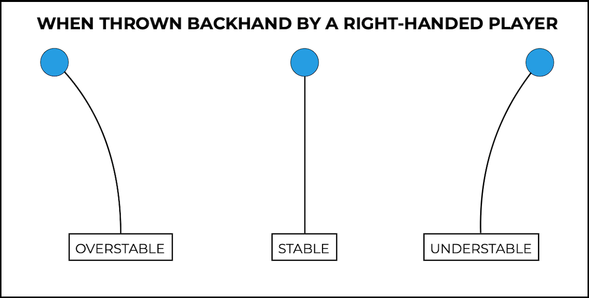

Disc golfi kettad

Siin leheküljel on võimalik tutvuda disc golfi ketaste lennuviisiga.
Disc golfis jagatakse kettad üldjuhul kolmeks erinevaks tüübiks: overstable, understable ja neutral.
Disc golfi kettad ja nende lennuviisPõhilised tüübid on
- Overstable
- Understable
- Neutral
| 1 | 2 | 3 |
|---|---|---|
| A | B | C |